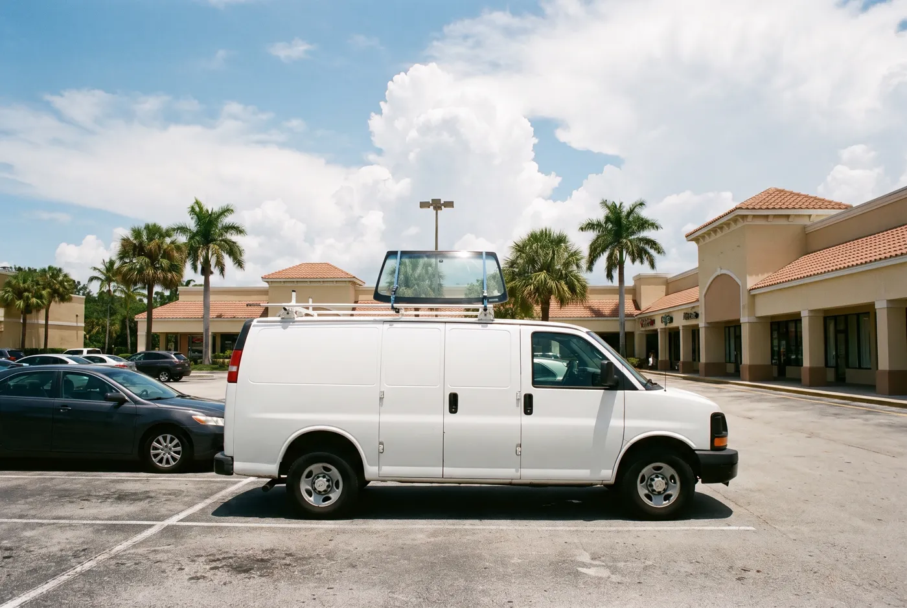
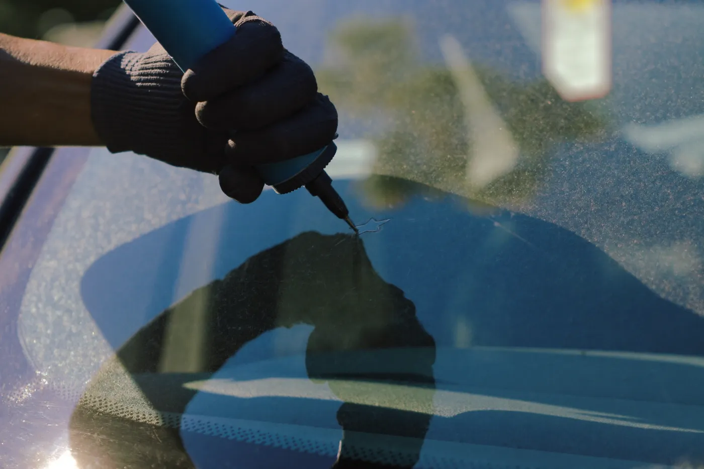

Auto Glass Services in Cocoa, FL
Every service below is mobile. We bring the glass to your home, office, or job site in Cocoa and nearby Brevard County towns.
Mobile Auto Glass Services for Cocoa Drivers
Our mobile auto glass services in Cocoa cover every piece of glass on a car, truck, or SUV. Whether a rock off I-95 chipped your windshield or a storm shattered a side window, a technician can usually fix it in your driveway the same week you call.
Not sure which service you need? Call and describe the damage, and we will tell you whether it is a repair or a replacement before anyone drives out.

Windshield Replacement in Cocoa
Windshield replacement in Cocoa removes a cracked, pitted, or shattered windshield and installs new laminated safety glass with fresh urethane adhesive. The windshield is a structural part of the car. It helps the roof hold up in a rollover and gives the passenger airbag something to push against, so a weak windshield is a safety problem, not just a view problem.
Drivers need a replacement when a crack is longer than a few inches, sits in the driver’s line of sight, or reaches the edge of the glass. Ignoring it lets the crack spread with every hot afternoon and pothole, and a badly cracked windshield can earn a ticket if it blocks your view.
Read more on our Windshield Replacement in Cocoa page. Call us today for windshield replacement in Cocoa at (321) 417-3847.
Windshield Chip Repair in Cocoa
Windshield chip repair in Cocoa fills a small rock chip with clear resin that bonds the glass back together and stops the damage from spreading. The repair takes about 30 minutes and keeps your factory windshield and its original seal in place.
Anyone with a fresh chip smaller than a quarter should call quickly. A chip left alone collects dirt and moisture, and Florida heat cycles can turn it into a crack, which means paying for a full windshield instead of a quick repair.
Read more on our Windshield Chip Repair in Cocoa page. Call us today for windshield chip repair in Cocoa at (321) 417-3847.
Car Window Replacement in Cocoa
Car window replacement in Cocoa covers door glass, quarter glass, vent windows, and rear windshields. Most side and rear glass is tempered, so it breaks into small pieces that have to be vacuumed out of the door panel and interior before the new glass goes in.
Drivers need this after a break-in, a storm, or a door regulator failure. Leaving the opening covered in plastic invites rain damage, mold, and theft, so it should be fixed the same day or as soon as possible.
Read more on our Car Window Replacement in Cocoa page. Call us today for car Window replacement in Cocoa at (321) 417-3847.
ADAS Camera Calibration Help in Cocoa
ADAS calibration resets the forward-facing camera mounted on many newer windshields so lane keeping, automatic emergency braking, and adaptive cruise control read the road correctly. The camera has to be aimed precisely after a new windshield goes in.
Owners of newer vehicles with these safety features need calibration after a windshield replacement in Cocoa. Skipping it can leave the system steering or braking at the wrong time, or shut the features off with a warning light.
Read more on our ADAS Camera Calibration Help in Cocoa page. Call us today for ADAS camera calibration in Cocoa at (321) 417-3847.
Cracked or Chipped Glass in Cocoa?
Call now for a free auto glass quote. We come to your home or job site anywhere in central Brevard County.
Call (321) 417-3847 for a Free Quote